Kelola Bisnis Anda lebih pintar
dari browser dimana saja.
MasSoft Online merapikan General Ledger, Aset Tetap, Pembelian, dan Penjualan dalam satu dashboard cloud — dikembangkan oleh MAS Software, pembuat software akuntansi asli Indonesia sejak 1984.
Seperti apa tampilan MasSoft Online?
Klik salah satu tampilan di bawah ini untuk melihat dashboard General Ledger, Supplier & Pembelian, Customer & Penjualan, hingga Persediaan Barang.
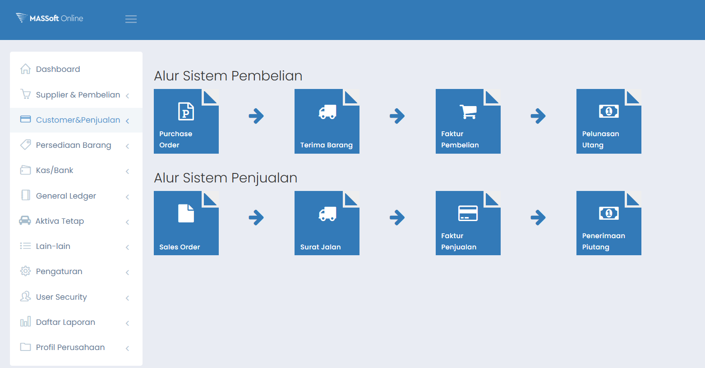
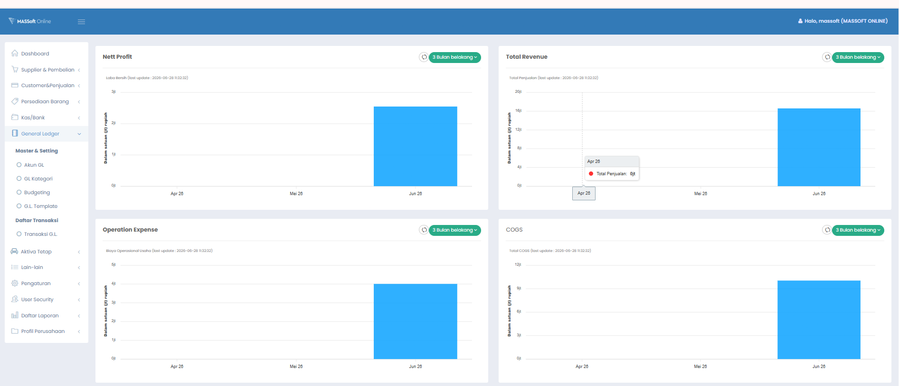
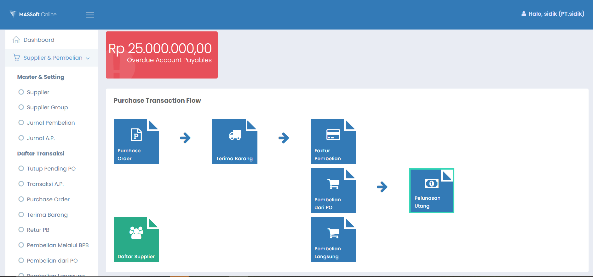
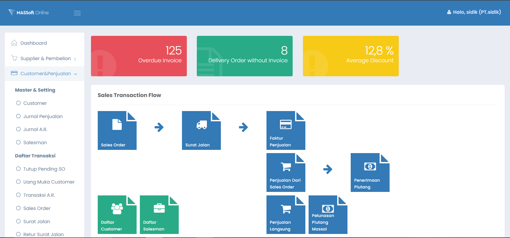
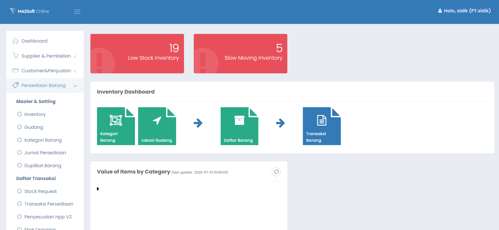
Anak bisnis dari MAS Software, pengalaman 40+ tahun di akuntansi bisnis.
MAS Software telah mengembangkan software akuntansi dan ERP asli Indonesia sejak 1984, dipercaya 1.000+ perusahaan di lebih dari 20 industri melalui produk MASERP. MasSoft Online menghadirkan pengalaman itu dalam versi cloud yang ringan — cukup buka browser, seluruh transaksi, jurnal, dan laporan keuangan langsung tersedia dari mana saja.
MAS Software
MasSoft Online dikembangkan oleh tim yang sama di balik MASERP, software ERP untuk perusahaan menengah dan enterprise di Indonesia — mencakup akuntansi, inventory, manufaktur, hingga aset tetap dalam satu sistem.
Kunjungi mas-software.com →Coba tanpa risiko
Buat akun, jalankan transaksi pembelian & penjualan pertama Anda, dan lihat laporan keuangan otomatis tersaji — gratis untuk 6 bulan pertama.
Buka massoft.online →Satu dashboard, empat alur kerja yang saling terhubung.
Buku besar yang selalu balance, setiap saat
Semua transaksi otomatis terjurnal ke Chart of Account yang tepat. Neraca dan Laba Rugi tersaji real-time, tanpa rekap manual di akhir bulan.
- Chart of Account fleksibel, ratusan kode GL siap pakai
- Laporan Buku Besar per akun, per periode
- Neraca & Laba Rugi otomatis ter-generate
 Dashboard
Dashboard
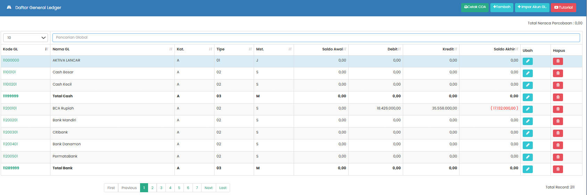
Daftar COA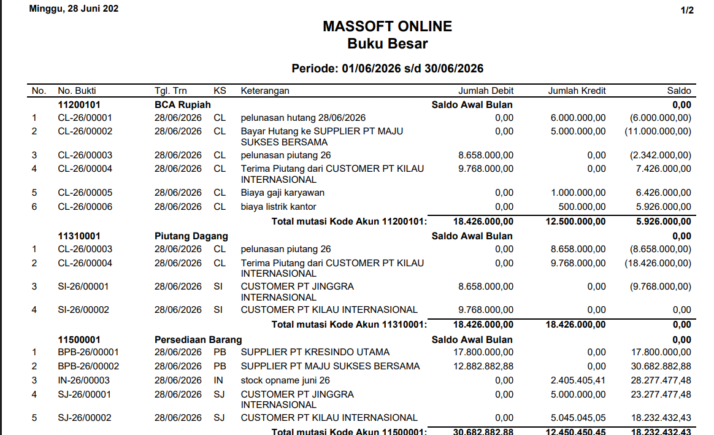
Buku Besar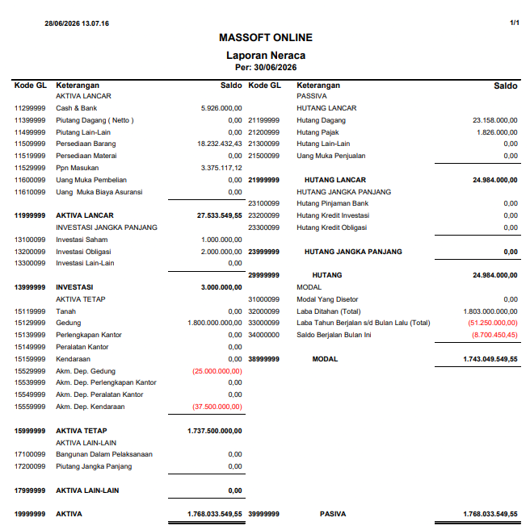
Neraca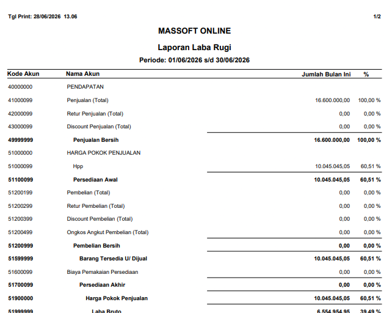
Laba RugiPenyusutan dihitung otomatis, kartu aset tersimpan rapi
Catat aset dari tanggal beli hingga masa manfaat, pilih metode Garis Lurus atau Saldo Menurun, dan biarkan sistem menjurnal biaya penyusutan tiap bulan ke akun yang sudah ditentukan.
- Kartu aset lengkap dengan lokasi & penanggung jawab
- Metode Straight Line maupun Declining Balance
- Jurnal penyusutan otomatis setiap periode
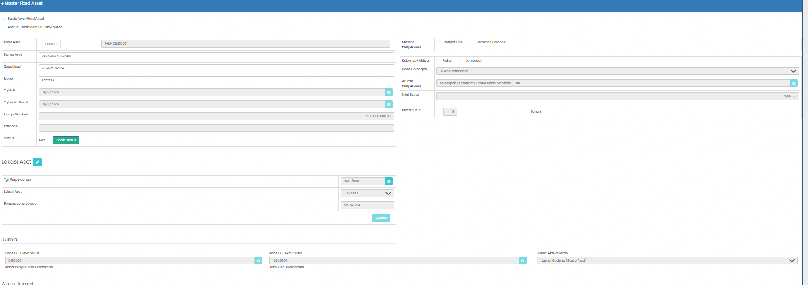
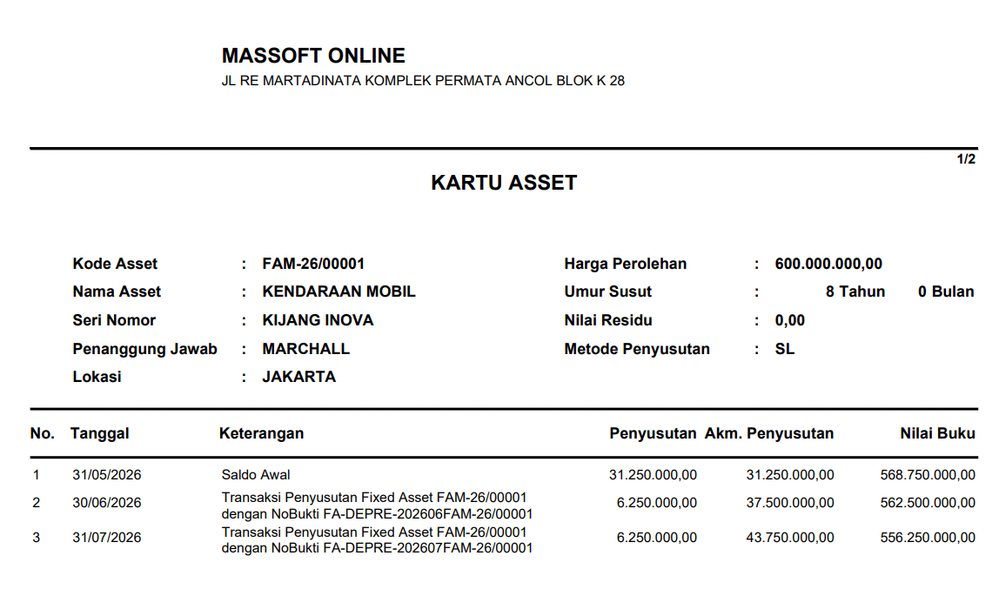
Kartu AssetDari purchase order sampai pelunasan, satu alur
Kelola data supplier, terbitkan faktur pembelian dari PO atau BPB, pantau umur hutang, dan tahu persis kapan jatuh tempo pembayaran.
- Alur Purchase Order → Terima Barang → Faktur → Pelunasan
- Laporan Daftar Hutang & Umur Hutang otomatis
- Rekap pembelian harian per supplier
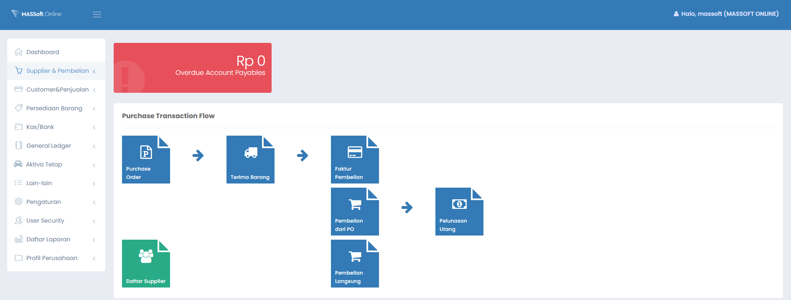
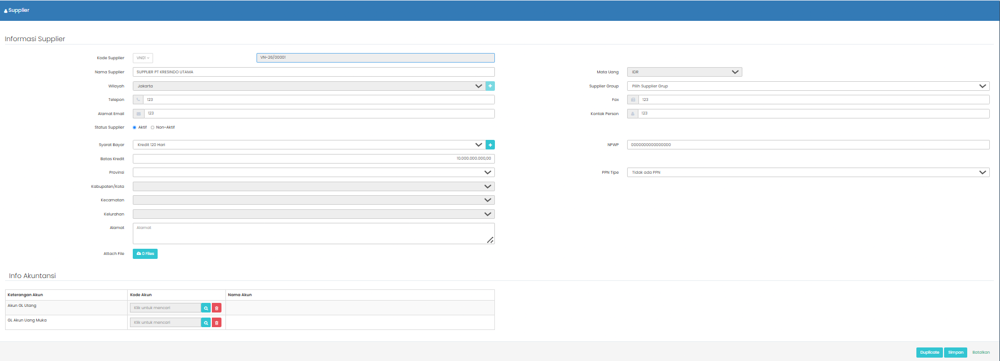
Master Supplier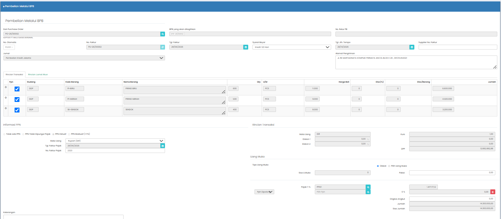
Faktur Beli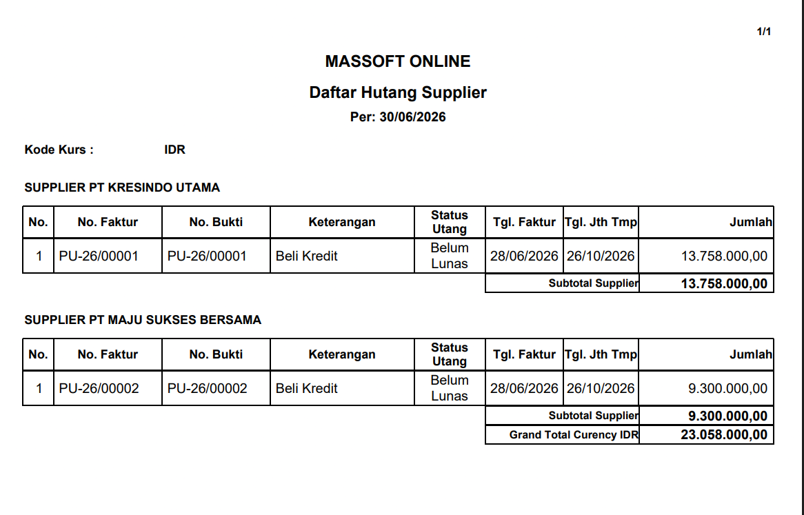
Daftar Hutang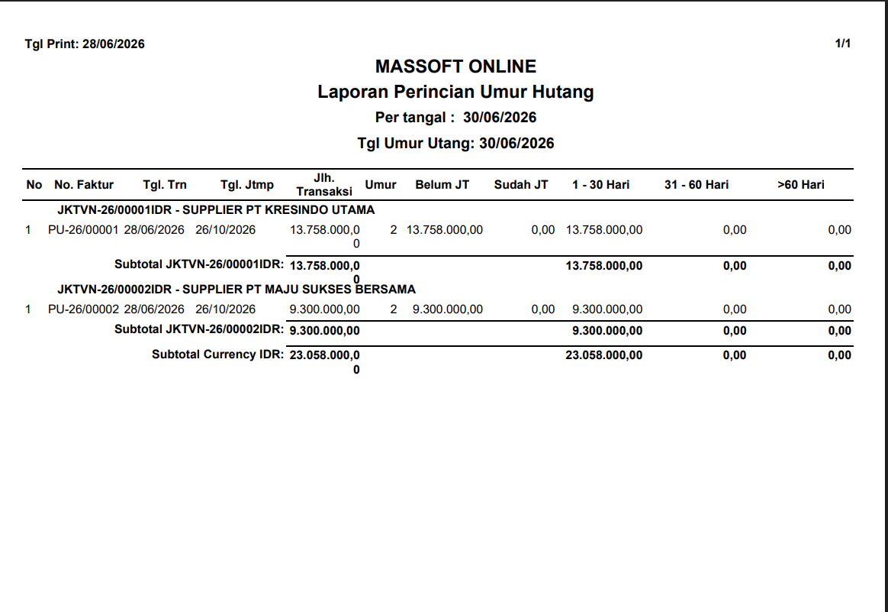
Umur HutangFaktur, piutang, dan analisa penjualan dalam genggaman
Terbitkan faktur penjualan dari sales order atau surat jalan, terima pelunasan piutang multi-faktur sekaligus, dan pantau performa penjualan per pelanggan maupun per produk.
- Alur Sales Order → Surat Jalan → Faktur → Penerimaan Piutang
- Laporan analisa penjualan per produk & per pelanggan
- Reminder jatuh tempo piutang otomatis
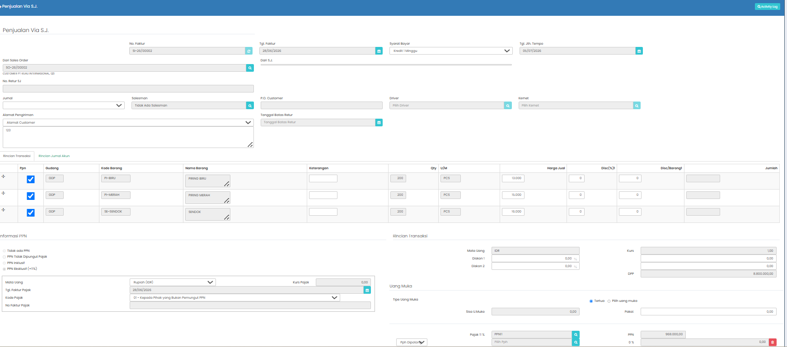
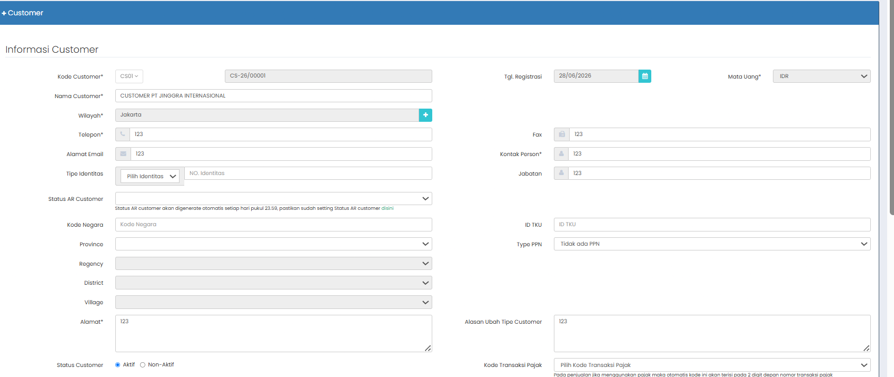
Master Customer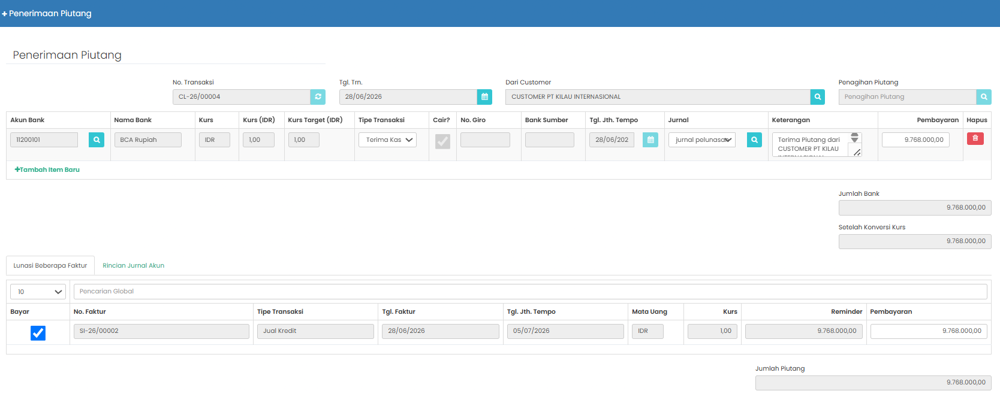
Terima Piutang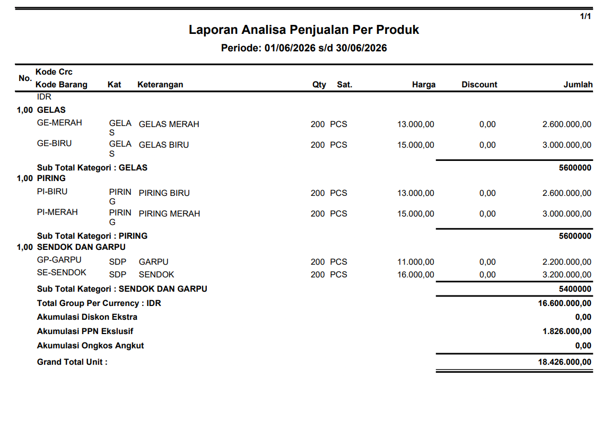
Analisa Jual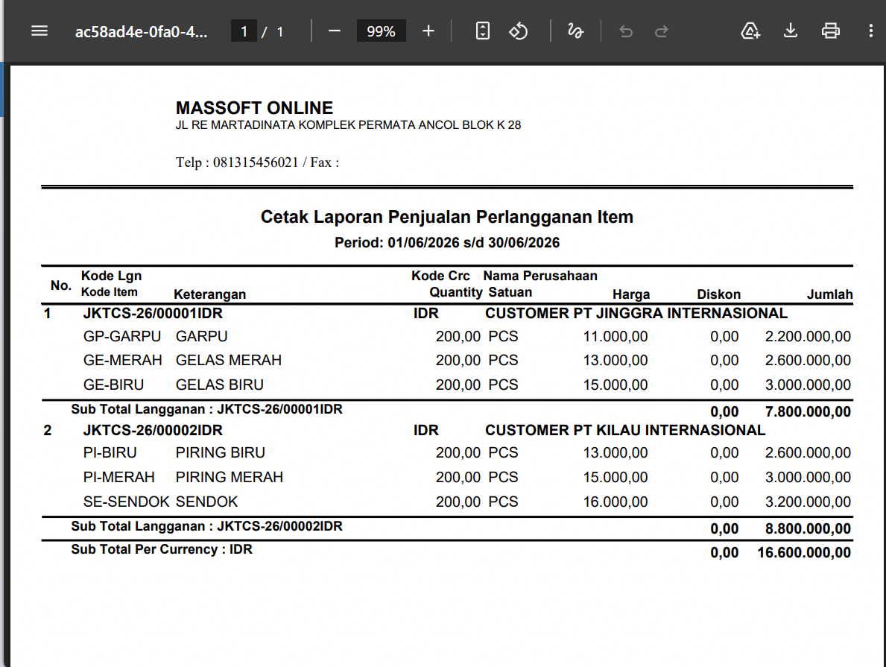
Per PelangganMengapa bisnis memilih MasSoft Online?
100% Berbasis Web
Buat faktur, jurnal, dan laporan langsung dari browser — laptop, tablet, atau HP, tanpa instalasi.
Modul Terintegrasi
Pembelian, penjualan, aset tetap, dan general ledger saling terhubung dalam satu database.
Buatan Asli Indonesia
Dikembangkan MAS Software untuk kebutuhan pembukuan bisnis Indonesia, bukan modifikasi produk asing.
Siap Mendampingi
Tim support siap membantu, dari onboarding awal hingga penyelesaian kendala harian.
Ingin memantau kegiatan perusahaan secara online, sambil berlibur?
Pakailah MasSoft Online, software akuntansi yang sudah banyak dipakai di Indonesia sejak tahun 1984. Isi dan lihat data pembukuan Anda kapan saja, di mana saja.